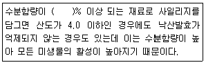
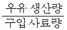
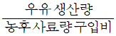
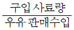
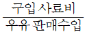
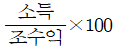
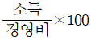
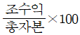
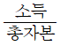

축산기능사 (2009-07-12 기출문제)
1과목: 축산개론
1. 면양 거세의 목적에 적합하지 않은 것은?
- 도체의 품질개선
- 성질이 온순하여 혼합사육 가능
- 육질 향상
- 사료효율 향상
(정답률: 85%)

2. 다음 중 기생충성 질병이 아닌 것은?
- 소간질증
- 방선균증
- 폐충종
- 콕시듐증
(정답률: 69%)
3. 가축 증체율 저하, 비유량 감소, 산란율의 저하, 발정의 약화 등과 가장 관계 깊은 것은?
- 기온이 낮을 때(저온)
- 기온이 높은 때(고온)
- 습도가 낮은 때(저습)
- 기온지 적합할 때(적온)
(정답률: 86%)
4. 원유의 위생적인 착유와 냉각이 원유 품질에 미치는 영향설명으로 옳은 것은?
- 원유는 위생적으로 착유되고 5℃ 이하로 속히 냉각되어야 품질을 보존할 수 있다.
- 원유는 비위생적으로도 착유되어도 5℃ 이하로 속히 냉각만 되면 품질을 보존할 수 있다.
- 원유는 위생적으로 착유되면 냉각시키지 않아도 품질을 보존할 수 있다.
- 원유는 비위생적으로 착유되고 냉각시키지 않아도 품질을 보존할 수 있다.
(정답률: 91%)
5. 바이러스에 의한 소의 전염병으로 입술, 혀, 발굽 부위에 수포가 발생하는 질병은?
- 우역
- 구제역
- 우두
- 유행열
(정답률: 86%)
6. 덴마크에서 흰색 토산종에 요크셔종을 교배시켜 베이컨형으로 개량한 흰 돼지 품종은?
- 폴랜드차이나
- 체스터화이터
- 햄프셔
- 랜드레이스
(정답률: 76%)
7. 가축의 사료중독 현상과 관계가 먼 것은?
- 유독성 식물 중독
- 사료 중의 세균중독
- 사료의 부패중독
- 생장 촉진제 첨가
(정답률: 86%)
8. 원생동물에 의하여 발생하는 닭의 질병은?
- 콜레라
- 콕시듐병
- 뉴캐슬병
- 마렉병
(정답률: 58%)
9. 섭취한 총 에너지에서 똥으로 배설된 에너지를 빼고 남은 부분의 에너지는?
- 대사에너지
- 가소화에너지
- 총에너지
- 정미에너지
(정답률: 78%)
10. 젖소의 발정 징후가 아닌 것은?
- 다른 암소나 수소가 올라타는 것을 허용치 않는다.
- 정서적으로 불안한 상태를 보인다.
- 외음부가 붓고 질 점액이 흐른다.
- 교미 자세를 취한다.
(정답률: 92%)
11. 반추 동물의 제1위는?
- 혹위
- 겹주름위
- 벌집위
- 주름위(샘위)
(정답률: 84%)
12. 섭취한 사료를 동물 체내에서 소화할 때 관계없는 기관은?
- 구강
- 위
- 소장
- 콩팥
(정답률: 88%)
13. 호르몬 중 암컷의 자궁수축, 출산촉진, 유즙 배출에 관계 하는 것은?
- 프로게스테론
- 옥시토신
- 릴랙신
- 부신피질호르몬
(정답률: 86%)
14. 돼지의 인공수정시 웅돈 1두가 1주당 적정한 정액채취 횟수는?
- 1~3회/주
- 4~6회/주
- 7~8회/주
- 10~12회/주
(정답률: 80%)
15. 젖소의 사육방식에는 계류식과 개방식이 있는데 계류식 우사의 장점으로 옳은 것은?
- 건축비가 적게 든다.
- 개체별 관리가 가능하다.
- 사료급여, 분뇨처리 작업이 편리하다.
- 소의 자유로운 운동이 가능하다.
(정답률: 79%)
16. 돼지의 질병 중 호흡기 질병인 것은?
- 살모넬라병
- 오제스키병
- 돼지적리
- 부종증
(정답률: 75%)
17. 다음 중 원산지가 동양종인 닭의 종류는?
- 레그혼
- 코친
- 클리머스록
- 미노르카
(정답률: 72%)
18. 교미동작이나 이와 유사한 자극이 있은 후 가장 빠른 시간에 배란이 되는 가축은?
- 양
- 염소
- 토끼
- 돼지
(정답률: 90%)
19. 큰 소의 이는 전부 몇 개인가?
- 16개
- 24개
- 32개
- 36개
(정답률: 73%)
20. 돼지의 육성에서 잡종강체를 최대한 이용하기 위한 교배 방법은?
- 1대잡종샌산
- 윤환교배
- 3원교잡종생산
- 계통교배
(정답률: 83%)
2과목: 사료작물
21. 사일리지용(엔실리지용) 옥수수를 수확한 뒤 후작으로 재배 가능한 밭 사료작물이 아닌 것은?
- 수단그라스
- 유채
- 귀리
- 호밀
(정답률: 70%)
22. 일반적으로 생산성이 많이 떨어진 경우 실시하는 초지의 갱신주기로 가장 적합한 것은?
- 1년 사용 후
- 2~3년 지난 후
- 4~6년 지난 후
- 7~10년 지난 후
(정답률: 64%)
23. 넓은 방목지에 적당한 파종방법은?
- 흩뿌림
- 줄뿌림
- 점뿌림
- 무더기뿌림
(정답률: 86%)
24. 어린 식물체는 청산(시안화수소산)이 함유되어 있어 섭취시 가축의 중독에 가장 유의할 작물은?
- 옥수수
- 호밀
- 수단그라스
- 귀리
(정답률: 82%)
25. 벼과(화본과) 목초를 건초로 이용할 때 양과 질을 생각한다면 베는 적기로 가장 알맞은 것은?
- 유식물기
- 이삭이 나온 때부터 꽃이 필 때
- 이삭이 여무는 결실기
- 잎만 있고 줄기가 없을 때
(정답률: 78%)
26. 옥수수 마디가 짧고 키가 자라지 않으며 병의 발생은 멸구류에 의하여 전염되고, 병증을 보면 잎의 색깔이 담녹색을 보이는 병은?
- 흑조위축병
- 깜부기병
- 문고병
- 매운병
(정답률: 78%)
27. 초지조성방법 중 땅을 갈아엎지 않고 초지를 만들 대상지에 가축을 방목하여 야생초나 잡관목을 밟아 없애거나 약하게 만든 다음 초지를 조성하는 방법은?
- 경운 초지조성
- 겉뿌림 초지조성
- 임간 초지조성
- 제경법 초지조성
(정답률: 80%)
28. 목구를 전기옥책 등으로 작게 나누어 초지를 집약적으로 이용하는 방법으로 이용률이 가장 높은 방목법은?
- 고정방목
- 연속방목
- 대상방목
- 계목
(정답률: 54%)
29. 다음 ()안에 적합한 것은?

- 50
- 60
- 70
- 80
(정답률: 69%)
30. 채초(採草)를 과도하게 자주 할 경우 발생하는 현상은?
- 뿌리에 영양축적이 많아진다.
- 다음해 봄의 눈 뜨는 시기가 늦어진다.
- 종자의 성숙이 빨라진다.
- 수량과 생산연한을 감소시키게 된다.
(정답률: 77%)
31. 경운 초지 조성시의 특징 설명으로 틀린 것은?
- 전 식생 및 낙엽 등을 땅속에 묻어 버린다.
- 잡목과 산야초의 재생이 적어 초지사후 관리에 용이하다.
- 장애물제거에 노력과 시간이 많이 들지만, 토양유실의 염려가 없다.
- 초지의 초기수량이 높다.
(정답률: 70%)
32. 오처드그라스(orchard grass)가 자라는데 알맞은 온도 범위는 몇 ℃ 정도인가?
- 1~15℃
- 15~21℃
- 21~31℃
- 32℃ 이상
(정답률: 71%)
33. 목초의 파종량에 관한 설명으로 가장 관계가 없는 것은?
- 적기가 지났을 때는 파종량을 늘린다.
- 발아율이 나쁘면 파종량을 늘린다.
- 건조시에 파종할 때는 파종량을 늘린다.
- 늦게 수확할 것은 파종량을 늘린다.
(정답률: 64%)
34. 켄터키 블루그래스에 대한 설명으로 옳은 것은?
- 그늘에 견디는 힘이 가장 강하다.
- 높은 알칼로이드 함량으로 가축에 대한 기호성이 낮다.
- 뿌리가 깊어 가뭄이나 더운 지역에 알맞다.
- 하번초로 방목에 적합하다.
(정답률: 61%)
35. 어린식물 기에는 활력이 강하고 기호성이 좋으나 내한성이 낮은 목초로 밭에 있어서는 사일리지용 옥수수의 뒷그루로, 그리고 논에서는 논 뒷그루로도 이용되는 목초는?
- 오처드그라스
- 톨페스큐
- 이탈리안 라이그라스
- 켄터키 블루그라스
(정답률: 66%)
36. “앞으로의 시계는 종자전쟁의 시대 될 것이다.”란 말은 품종육성의 중요성을 강조하기 위한 말이다. 사료작물에 있어서 육종의 목표는 재배될 지역 특성과 많은 연관이 있다. 일반적인 사료작물의 육종목표와 거리가 먼 것은?
- 수량 및 유식물 활력
- 불량환경 적응성 및 지속성
- 발효성
- 내병성
(정답률: 74%)
37. 방목의 특징 설명으로 옳은 것은?
- 풋베기보다 노동력이 많이 든다.
- 봄철에 풋베기 보다 사초의 이용을 빨리 할 수 있다.
- 가축이 먹지 않아 허실되는 사초의 양을 줄일 수 있다.
- 단위면적당 풋베기 보다 가축을 더 기를 수 있다.
(정답률: 53%)
38. 다음 파종방법 중 목초의 정착력이 가장 좋은 방법은?
- 산파
- 조파
- 대상조파
- 세조파
(정답률: 71%)
39. 콩과(두과) 우점초지에서 방목을 주로 할 때 발생될 수 있는 가축 질병은?
- 고창증
- 그라스테타니
- 청산중독
- 맥각병
(정답률: 67%)
40. 사일리지의 외관상 품질 평가를 하고자 한다. 다음 중 품질이 우수한 사일리지로 판단되는 것은?
- 색채가 암갈색이다.
- 낙산취가 난다.
- 향긋한 산미(酸味)가 있다.
- 수분이 마르면서 끈적끈적한 느낌이 있다.
(정답률: 87%)
3과목: 축산경영
41. 도시 근교에서의 농경지가 좁은 상태에서 우유생산을 주로 하는 경영 형태는?
- 전업적 비육 경영
- 초지형 낙농 경영
- 송아지 생산 경영
- 전업적 낙농 경영
(정답률: 82%)
42. 낙농경영에서 소득에 들어가지 않는 것은?
- 차입자본이자
- 자가노동비
- 자기자본이자
- 자기소유지대
(정답률: 46%)
43. 유사비(乳飼比)를 바르게 표현한 것은?




(정답률: 59%)
44. 축산경영개선을 위해서 경영진단을 한다. 다음 중 축산경영 진단시 비교기준이 불명확한 방법은?
- 표준적 진단기준(지표)과 비교하는 방법
- 당해 지역의 유사한 경영의 경영성과와 비교하는 방법
- 축종이 서로 다른 경영을 비교하는 방법
- 자신의 경영성적을 연차간 혹은 기간별로 비교하는 방법
(정답률: 82%)
45. 축산물의 판매기능에 속하는 것은?
- 수요창조
- 인도 시기나 자본조건의 상담
- 판매 필요 여부
- 판매품의 품질 및 수량결정
(정답률: 54%)
46. 어느 양계농가가 사육한 육계를 1마리당 수집상에게 1000원에 판매하였는데, 이 육계가 도시에서 소비자에게 닭으로 판매될 때에는 5000원에 판매되었다. 이 때 농가수취율은?
- 20%
- 30%
- 40%
- 50%
(정답률: 68%)
47. 소득률 공식으로 옳은 것은?




(정답률: 71%)
48. 축산물 유통 기능에는 물리적 기능과 교환 기능, 그리고 조성 기능으로 크게 분류되는데 다음 중 물리적 기능에 해당되지 않는 것은?
- 등급기능
- 수송기능
- 저장기능
- 가공기능
(정답률: 72%)
49. 비육한 소의 출하 방식으로 신뢰도가 높고 유리한 방식은?
- 우시장 이용
- 계통출하 이용
- 산지지상 이용
- 소매시장 이용
(정답률: 80%)
50. 축산경영의 유형이 지역별로 다르게 나타나는 것은 토지의 어떤 특성 때문인가?
- 불확장성
- 비이동성
- 불소모성
- 무한성
(정답률: 74%)
51. 축산물 생산비를 잘못 설명한 것은?
- 제2차 생산비는 목적하는 축산물의 기초 원가이다.
- 경영자본이자와 토지자본이자는 1차 생산비에 포함되지 않는다.
- 제1차 생산비는 경영개선을 위한 경영능률의 측정에 중요한 자료가 된다.
- 제2차 생산비는 생산에 관계된 모든 비용의 합계로서 축산물의 가격정책 자료로 널리 이용된다.
(정답률: 61%)
52. 착유우의 구입가격이 3,000,000원, 착유우의 이용연수가 5년, 착유우의 잔존가가 구입가의 50%일 때 정액법을 이용하여 감가상각비를 산출할 경우 이 착유우의 매년 감가상각비는?
- 200,000원
- 250,000원
- 300,000원
- 350,000원
(정답률: 74%)
53. 전업적인 축산경영이 갖는 장점은?
- 노동의 숙련도를 높이고 분업의 이익을 얻을 수 있다.
- 노동배분의 평균화를 기할 수 있다.
- 자금회전을 원활히 할 수 있다.
- 경제적 위험을 분산시킬 수 있다.
(정답률: 72%)
54. 다음 축산경영과 관련된 설명 중 옳은 것은?
- 한우 비육우는 감가상각을 하지 않는다.
- 모든 가축은 감가상각을 해야 한다.
- 비육돈도 고정자산이기 때문에 감가상각을 해야 한다.
- 착유우는 감가상각을 하지 않는다.
(정답률: 63%)
55. 양돈농가의 어느 해 소득률이 50% 이었다. 이농가가 양돈조수익 80000천원을 얻었을 때 양돈소득은?
- 20000천원
- 40000천원
- 60000천원
- 80000천원
(정답률: 86%)
56. 다음 중 친환경 축산을 위한 합리적인 복합경영의 형태가 될 수 없는 것은?
- 비육우 경영+과수 경영
- 양계 경영+채소 경영
- 번식우 경영+미작 경영
- 낙농경영+양동경영
(정답률: 79%)
57. “유우 1두당 산유량”, “모든 1두당 자돈이유구수”는 생산량을 두수로 나눈 것이다. 이러한 것을 생산기술 분석에서 무엇이라고 하는가?
- 이용률ㆍ조업도ㆍ회전율
- 투입ㆍ산출비율
- 노동생산성
- 가축생산성
(정답률: 71%)
58. 한우고기의 수요변화와 관련된 설명으로 바르게 설명한 것은?
- 국민들의 수득수준이 증가할수록 고급 브랜드육을 선호하는 경향이 있다.
- 돼지고기 가격이 크게 상승하면 한우고기의 수요는 감소하는 경향이 있다.
- 한우고기 가격이 상승하면 한우고기 수요도 따라서 증대되는 경향이 있다.
- 한우고기 가격이 하락하면 한우고기 수요도 따라서 감소하기 마련이다.
(정답률: 84%)
59. 축산물 가격의 특성을 설명한 것으로 적당하지 않은 것은?
- 수요과 공급이 균형되어 가격은 안정되어 있다.
- 축산물은 타 농산물과 달리 자가소비 비중이 적어 거의 전량을 도매시장, 상인 등에 판매한다.
- 복잡한 유통구조와 가격구조를 가지고 있다.
- 축산물 가격이 주기적으로 변동하는 경향이 있다.
(정답률: 64%)
60. 돼지고기 공급에 영향을 미치는 요인이 아닌 것은?
- 배합사료가격의 하락
- 새로운 양돈기술의 도입으로 생산비 절감
- 돼지고기의 수입량 증가
- 우유 가격의 하락
(정답률: 86%)